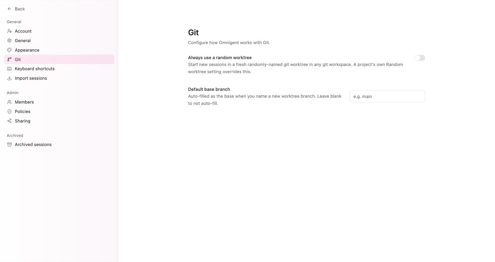

Workspace 面板：Files、Changes、Agents 與 Terminal
為何需要本章
對話串告訴你代理說了什麼，Workspace 面板告訴你它在那台機器上動了什麼。這兩件事不會自動一致——代理可以講得頭頭是道，同時改錯檔案。
這一章講的是畫面右側那塊工作區面板：怎麼叫出來、怎麼讓它預設就開著、它看的是哪個目錄，以及它跟對話串的呈現方式怎麼搭配。
先講清楚本章的邊界。本章標題列出 Files、Changes、Agents、Terminal 四個分頁，那是本書規劃的主題。2026-09-09 對正式站的實機記錄涵蓋的是 Workspace 面板的開關、預設狀態與外觀設定，沒有逐一拍下四個分頁裡的內容。所以本章不描述各分頁的欄位、按鈕或差異呈現方式，等下一次實機補拍再補上。本章寫的每一條，都是那份記錄支持得住的。
核心觀念：兩塊側邊欄，兩種視角
介面上有兩塊可以收合的側邊欄，各自有專屬快捷鍵：
| 面板 | 快捷鍵 | 它給你的視角 |
|---|---|---|
| 對話側邊欄 | ⌘⌥[ | 導覽：New session、Automations、Inbox、Usage，以及 Pinned 與 Projects 底下的 session 清單 |
| 工作區側邊欄（Workspace） | ⌘⌥] | 執行現場：這個 session 在目標機器上動到的東西 |
工作區（Workspace）：這個 session 實際動手的那台機器上的那個目錄。它由 Composer 下層第二個選擇器（工作目錄）與第三個選擇器（worktree）共同決定，不是一個獨立設定。
這句定義是本章最重要的一句話：面板顯示的範圍不歸面板管，歸開 session 時選的那兩個選擇器管。面板裡看不到你要的檔案，通常不是面板壞了，是這個 session 從一開始就指向別的地方。

開關它，並決定它預設要不要開著
臨時開關用 ⌘⌥]。要改預設值，路徑是 Settings → Appearance → Workspace panel，兩個選項：
Open：進到 session 畫面時面板就是展開的Collapsed：預設收起，需要時再用快捷鍵叫出來
怎麼選看你的螢幕與工作方式。在筆電上兩塊側邊欄同時展開會把對話串擠得很窄，這時把工作區設成 Collapsed、需要查證時才 ⌘⌥] 打開，會比一直開著好用。反過來，如果你正在盯一個會改很多檔案的任務，設成 Open 少按一次鍵。
同一頁還有 Translucent sidebars（半透明側邊欄）。這是純視覺選項，不影響面板內容，但在淺色主題下關掉它，面板與對話串的邊界會比較清楚。
對話串怎麼呈現，終端機用什麼配色
有兩個設定會影響你「看得到多少執行細節」，兩個都在 Settings → Appearance。
| 設定 | 選項 | 實際差別 |
|---|---|---|
| Default transcript view | Chat / Terminal | 對話串的預設呈現方式。這是對話串的設定，不是工作區面板的分頁 |
| Terminal theme | Match app / Light / Dark | 終端機輸出的配色。可以跟整個介面的深淺色不同 |
| Mode | System / Light / Dark | 整個介面的深淺色 |
| Code font size / family | 數值與字體 | 程式碼與終端機輸出的字級與字體 |
| Heavier code font | 開 / 關 | 把等寬字體加粗，低對比螢幕上比較看得清 |
Default transcript view 值得多說一句。Chat 是整理過的對話式呈現，Terminal 是原始終端機式的呈現。想確認代理實際跑了什麼指令、輸出了什麼，後者資訊比較完整；想快速讀懂它在做什麼，前者比較省力。這是預設值，不是鎖定值。
Terminal theme 設成 Match app 之外的值是有實際用途的：整個介面用淺色、終端機維持深色，長時間盯輸出比較不刺眼，而且深淺交界本身就是一個「這段是機器輸出」的視覺提示。
開始之前
本章的步驟需要一個已經跑過至少一個回合的 session。完全空白的 session 沒東西可看，你會分不清是面板沒內容還是設定沒生效。
- 依第 5、6 章開一個 session，Host 有綠點，工作目錄挑一個你熟悉的資料夾
- 先派一個只讀的小任務（例如列出目錄內容），讓它跑完一輪
- 記住你選的工作目錄叫什麼名字，等一下要拿來對照
如果這個 session 開了 worktree，代理看到的是另開的那一份，不是原本的目錄。對照的時候要拿 worktree 那一份來比，不然你會覺得「代理改的東西不見了」。
把工作區面板調成你順手的樣子
-
先用快捷鍵把兩塊側邊欄各開關一次
在一個跑過的 session 畫面上按
⌘⌥]，再按一次收回；然後按⌘⌥[，再按一次收回。目的是先確定你分得清哪塊是工作區、哪塊是對話導覽，之後排錯才不會弄混。 -
把面板打開，跟對話串逐句對照
面板開著，往回讀代理這一輪說過的話。它說讀了某個檔，面板裡有沒有；它說改了什麼，面板裡看不看得出來。對不上就是警訊，這時該做的是停下來確認機器與目錄，不是繼續往下派工。
-
設定面板的預設狀態
到
Settings→Appearance，把 Workspace panel 設成Open或Collapsed。設完回到 session 畫面重新進入一次，確認新開的畫面是你要的狀態。 -
調對話串呈現與終端機配色
同一頁把 Default transcript view 設成
Chat或Terminal，把 Terminal theme 設成Match app、Light或Dark。字太小就一併調Code font size，看不清楚就打開Heavier code font。 -
存一份設定，然後再跑一個會寫檔的小任務
調順之後按
Export把外觀設定存下來。接著派一個真的會建立檔案的小任務（例如在該目錄下寫一個測試用的文字檔），觀察面板在「有變更」時跟「只讀」時的差別。這一步是本章唯一需要動到檔案的地方，請在練習用目錄做。
怎麼確認做對了
四個檢查，全部通過才算把這個面板收進工具箱。
- 閉著眼睛按
⌘⌥]能開關工作區面板，按⌘⌥[能開關對話側邊欄，不會按反 - 關掉分頁重新進入 session，面板的展開狀態符合你在
Appearance設的值 - 面板顯示的範圍，跟你開 session 時選的工作目錄一致（有開 worktree 的話是 worktree 那一份）
- 剛才那個會寫檔的小任務，在面板上留下了你看得出來的痕跡
還有一條間接證據可以用：Inbox 的空狀態文案寫著「當代理需要你的輸入，或有人在某個檔案上留言，就會出現在這裡」。也就是檔案層級的留言不會停在工作區裡，它會走 Inbox。這條路徑屬於第 9 章。
故障排除
- 按了快捷鍵沒反應，或開到的是另一塊側邊欄：兩個快捷鍵只差一個括號方向，
⌘⌥]是工作區、⌘⌥[是對話側邊欄，很容易按反。按⌘/叫出快捷鍵表對照一次。 - 面板裡沒有你預期的檔案：九成是範圍問題不是面板問題。依序確認三件事：這個 session 的 Host 是不是你以為的那台、工作目錄選的是不是那個資料夾、有沒有開 worktree 導致代理看的是另一份。三者的設定位置都在 Composer 下層（第 5、6 章）。
- 每次進 session 都要手動開面板：那是預設值的問題。到
Settings→Appearance把 Workspace panel 從Collapsed改成Open。 - 終端機輸出的字太小或看不清：調
Code font size，必要時打開 Heavier code font。整體配色刺眼就把Terminal theme從Match app改成Dark或Light，它可以跟介面主題不同。 - 畫面被兩塊側邊欄擠到沒地方讀對話：把工作區設成
Collapsed，需要時才用⌘⌥]叫出來；或關掉 Translucent sidebars 讓邊界更清楚。外觀調亂了用同一頁的Reset to defaults一次還原。 - 想把某個 session 的畫面分享給同事一起看，卻被擋下來：這不是面板的限制，是分享設定。管理端的
Sharing有一個Read only (restricted)模式，在該模式下工作目錄是家目錄或檔案系統根的 session 完全不可分享。要分享就換一個範圍明確的工作目錄重開，細節在第 9 章。
固定來源
本章的產品邊界與版本說法，以下列來源的該 commit 內容為準，不以主分支的當下狀態為準。
Appearance 頁的設定項目（Workspace panel、Default transcript view、Terminal theme、Translucent sidebars、字體與 Export／Import／Reset）、兩組側邊欄快捷鍵、以及 Inbox 與 Sharing 的原文文案，來自 2026-09-09 對正式站的實機記錄，整理在本倉庫的 docs/research/ui-facts-2026-09-09.md。工作區面板四個分頁的內部畫面不在該次記錄範圍內，本章據實標示為未查證。
常見問題
為什麼這一章不介紹 Files、Changes、Agents、Terminal 四個分頁的內容？
因為本書的事實基礎是 2026-09-09 那次實機記錄，而那次記錄沒有逐一拍下四個分頁裡的畫面。本站的規矩是沒有實機依據的畫面不寫，寧可少寫也不編。你打開面板就會看到實際的分頁，那個才是準的；本章教你的是怎麼把面板叫出來、怎麼確認它看的是對的目錄，這兩件事沒有分頁內容也成立。
這一章的設定是逐個 session 的還是全域的？
全域的。Workspace panel、Default transcript view、Terminal theme 都在 Settings → Appearance，屬於你這個帳號的個人偏好，改了對所有 session 生效，也不影響其他成員。逐個 session 會變的是工作目錄與 worktree，那兩個在 Composer 下層，屬於第 6 章。
面板顯示的內容跟我在那台機器上直接看到的不一樣，是同步延遲嗎？
先不要往延遲想。最常見的原因是這個 session 開了 git 工作樹（worktree），代理動的是另開的那一份，你比對的卻是原本的目錄，兩邊當然不同。第二常見的原因是機器選錯了。確認方式在故障排除的第二條，按 Host、工作目錄、worktree 的順序查。
三種部署方式的工作區面板會不一樣嗎？
面板本身是同一套網頁介面，三種部署方式（Home Assistant 附加元件、Rootless Podman、k3s Helm）不會因此長得不同。會不同的是它連到的那台機器上有什麼檔案，以及該部署方式有沒有內建執行端。版本落差以本章「固定來源」指向的 commit 為準，跨部署的差異比較在第 19 章。
我調外觀調到很亂，可以整組還原嗎？
可以。Settings → Appearance 頁底有 Reset to defaults，一次還原整頁。調順的設定建議用同一排的 Export 存一份下來，換機器或換瀏覽器時 Import 回去，不用重調。這三個按鈕只影響外觀設定，不會動到你的 session 或 Project。